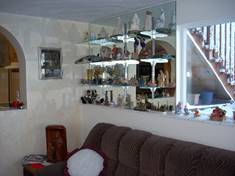
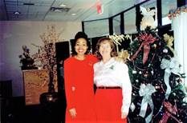

2007 has been a good year for Ken and I. It has gone by quickly. Ken keeps busy doing repairs and remodeling jobs for family and friends, and when it is out-of-town, he likes me to go with him. I enjoy being with him and enjoy being with our children and other family members, so I have gone whenever I could. I keep busy with church work, house work and family. I have been able to do some family history and am hoping to do more in the coming year. Ken really enjoys fishing, and I enjoy it too, so when Ken isn’t working and we have the time, we go fishing. Sometimes we have gone by ourselves and other times we have gone with some of our children and their families, or with cousins and friends. We had a fun get-a-way this summer with my sister, Georgia and her husband, Rick. They have a membership to Camper World, so we took our tent trailer and boat and went to the Camper World at Coalville, Utah. We had a great time
In March of 2007, we went on a tour to Israel with our daughter, Shellie, her husband, Roy, and 3 of their 4 sons. Roy’s parents went also.
We had a wonderful family vacation at Bear Lake with all our children and their families (34 out of 36) in July.
**For more on these vacations, see Chapter 55, Vacations & Reunions
Our granddaughter, Chelci, gave birth to their first child, Nathan Jeffrey Holste on the 17th of September. Nathan makes the 37th member of our family, and the 4th great grandchild.
We spent time this summer doing some remodeling, painting and getting new carpet for our cute basement apartment. Bob, Ken’s brother, and I were Ken’s helpers. Ken took out the door going into the sun room and also the window. I asked him if he could make arches for the window and door, and sure enough, he could and did. When we lived in our home in Layton, I had a large china cabinet, which our neighbor had given us. I had all the souvenirs, which our sons had brought back to us from their missions, souvenirs from our missions and other vacations and beautiful items our children and friends had given us. This cabinet was too large for our basement apartment, so Ken had glass shelves made and installed them on this west wall of our sunroom, for my souvenirs, etc. I was thrilled about that. Our apartment looks so nice now
.
Ken and I were just released as the ward nursery leaders. I enjoyed this calling more than Ken, but I was proud of him. He got down on the floor and played cars with the children or helped them put puzzles together and he had at least one on his lap during the lesson. He set up the tables and chairs for our snacks, helped me and Camille set up the nursery when we arrived. He was wonderful and the children loved him. The children are precious. It did get hard at times when one or more started crying and they would start some of the others crying. We had between 14 and 20 there each week so we were exhausted when we went into Sacrament Meeting. They just sustained Ken as the Ward Family History Consultant. I was excited about his calling because he will be trained and we can work on family history together. He will have at least one other person to help him train the members of our ward too. I am still the discussion leader for our Relief Society Book Group. I have had this calling for 2 ½ years, but I really enjoy it.
We love each other, our family, the Lord and his gospel and our many friends.
I wanted to insert this talk on family history, which I gave in August of 2007
TALK FOR SANFORD PORTER REUNION
(I was asked to tell about my project of writing and compiling the Byron Porter & Descendents Family History Book. This was done while living in Grantsville, UT)
BACKGROUND: In June of 1980, my uncle, Dale Porter, called and asked me if I would be interested in putting together a family history book for his parents - my grandparents, Byron and Mary Elizabeth or “May” as she was called, and their descendents. He knew I was interested in family histories, and he told me of a family history conference in Salt Lake City and said he would pay for me to go to it and he would finance the expenses until the books were printed and then we could sell them at a reduced cost to our families. I was excited and gained much information at the 3 day conference.
WHAT I DID: Shortly after the conference, I contacted my parents, siblings and each of my uncles, aunts and cousins and told them of this project and asked if they would get me a family group sheet of their family, family pictures and a personal history of themselves. I set a deadline for them to have these items in to me. Meanwhile I worked on gathering journals, and histories of my grandparents since they had already passed away and also what information I could collect on a deceased aunt & uncle, Maurine & Royal. . Grandma’s children were sure that she had written a history, but no one could find it so I asked each of them to write what they could remember about the lives of their parents – spiritual experiences, trials, successes, etc. I began compiling all this information together to form histories for them. Grandpa Porter was a writer, so I wanted some of his poems and stories in the book. I don’t know that he had any of them published other than one story “Red Cloud”, which was in the Morgan County newspaper, but I thought they were great and I know many other family members agreed with me. When the deadline for the histories, pictures, etc., came, I only had a few, so I sent out a reminder and set another deadline. More came in and after doing this a couple more times, I called and set up a time to come and pick up the materials of those I didn’t have. This way I was able to get histories from all of them. Some histories were more detailed and longer than others, but that didn’t matter. It was important that they had a history in this book for their posterity. Shortly before the manuscript was to go to the printer, my father, Glendon Porter, was going through some papers and found his mother’s history. We were all excited. I was able to add it to the history I had compiled. I felt that our prayers had been answered
I enlisted other people’s help. I knew a lady who did calligraphy and asked her if she would write our title page “Byron Porter Family Descendents”. My cousin, Verla Porter was going to BYU and also had a job there working in an office. She volunteered to type the final draft on her computer. I was excited about that as I only had a typewriter. She also volunteered to proof read and make corrections where needed. I would type a section, get it to her and she would type it up after work and in her free time.. That was a big help to me. She gave many, many hours to this project. I appreciated her help so much.
One member of the family had a beautiful picture of Grandpa and Grandma Porter on their wedding day, so I was able to use it in the book. I included Porter songs, pictures of their homes, a Pedigree Chart, histories of Grandpa & Grandma’s parents & grandparents - Lyman Wright, Byron’s father, spiritual experiences of Sanford Porter, Byron’s grandfather; history of Mary Elizabeth Clark Robinson, May’s mother; parting instructions & testimony of Ezra T. Clark, May’s grandfather. All these items were in the Introductory Pages. I made a Table of Contents with a chapter for each family.
I put a family tree and family group sheet at the beginning of each chapter. Of course it started with the Patriarch & Matriarch, Byron & May. Next I put a personal history sheet, then pictures of them, and then their history. I also included Byron & May’s Patriarchal Blessings as well as the poems and stories for Byron. At the end of this chapter, I put pictures of the family.
Mary Maurine was the oldest child so her information was in the 2nd chapter, then Elmer Royal had the 3rd chapter, then my parents, Glendon & Mildred, then Dad’s sister, Merlynn and her husband Jeff Olsen, the 6th chapter was another sister, Enid and her husband, Wayne De Graw. The 7th chapter was a brother, Joseph Verle and his wife, Beth, & family. Aunt Beth will be speaking on this program also. The youngest child was a son, Dale, so he and his wife, Esther and their family made up the 8th chapter, which was the last chapter.
GRANT STEVENSON – Uncle Dale, Dad and their siblings suggested I talk to Grant Stevenson, our good relative who owns a Genealogy or Family History firm in Provo, about printing the book. We made an appointment for me to bring the manuscript and come meet with him and his staff. Mom came with me, she was always a great support, as also was Dad. Grant Stevenson and his staff were so helpful and kind. They gave me suggestions, let me use their cutting tools, helped me with the layout and when I was finished and took the final draft there, they printed the book for us.
Including the index at the back, this book has 358 pages.
Grant asked how long it took me to put together this book. I was embarrassed to tell him it took me 3 years. I explained that with raising our family, helping Ken with the farm, my church and my civic callings, that I didn’t have as much time to devote to this project as I would have liked. He told me that 3 years wasn’t that long to put together a book of this size that many people took five to 10 years. That made me feel much better.
We had a Porter Family Reunion and gave the books out to the families at that time. Uncle Dale was very generous in financing most of the cost of the books. He wanted the family to pay a little for the books as he knew they would appreciate them more if they paid something for them, but he wanted the books to be reasonable enough so that everyone who wanted one could have it.
We had a Glendon Porter Reunion on the 27th and 28th of July and I was talking with a nephew, Nathan Tew, about family history books. He told me that he is in the Elder’s Quorum Presidency in his ward and a few weeks ago, he gave a lesson to the Elders on Family History. He said in preparing for this lesson, he read the 2nd Porter book, the one Aunt Beth did. He said the more he read, the more excited he got and he could hardly put it down. He said he learned so much about Byron, his great grandfather, and his other ancestors and he enjoyed giving the lesson. That’s how I got so excited about family history work. I started reading these histories and I wanted to read more. I got to know these wonderful people by reading about their lives. They have helped me because as I would read about the trials they had, I would say to myself “Wow!, if they had those trials and yet endured to the end, I should be able to endure with my trails.”
APPRECIATION: I am very grateful to Uncle Dale for giving me this opportunity. It was a wonderful experience. I appreciate and love my grandparents even more as I worked to put together their histories. They were a righteous couple. They had their trials and problems, just like all of us do, but they loved the Lord and loved the scriptures and faithfully endured to the end. I am so grateful for their examples. I got closer to my aunts, uncles and cousins not only by working with them to get their histories, pictures and family group sheets, but by reading their histories as I typed them into the manuscript. I am thankful that I was privileged to be born into this special family.
KEN’S MOTHER’S HISTORY: A few years ago, I encouraged Ken’s mother to write her history. She would say “Oh nobody would want to read it if I did. My life has been boring”. One day I started asking her questions about her life and as she answered these questions, I would write them down. Soon other things about her life would pop into her mind and she would tell me those things or experiences. It wasn’t long until I had several pages and then I read it back to her. I felt she had some great experiences and so I kept encouraging her to write down things as they came to her. Pretty soon, she was excited too. This went on for some time. Finally, I was able to compile it and add pictures. She passed away in November of that year. She had wanted to give them as Christmas gifts to her children and siblings, so we had them printed and spiral bound and gave the books as her final gift to them.
I would encourage all of you to read your family histories and learn about your ancestors. I would also encourage you to write your history if you haven’t already done so. You will be happy if you do, and your children and posterity will be thankful.
Now that I have retired, I still go over once a month to the District Office and Jackie Thompson and I walk and have lunch together and catch up on what we have been doing. Jackie is the director of a new Equity Department now. She called one day and asked if I would be willing to come out of retirement and be her secretary. This was after we came home from our mission. Ken didn’t want me to and I didn’t want to either, even though I would have enjoyed working with her and Ken and I could use the money. I wanted to be able to enjoy our grandchildren and families more, do more family history and temple work and enjoy life, so I declined. She understood and hired Patty Woodward. Patty had left the Planning Dept and was hired in Staff Development to take Billie’s place after she retired. Patty is a “flake” and not dependable. She is a social butterfly, so it caused a lot of frustration to Jackie, like Patty did to me. Jackie was so relieved when Patty quit. I think Patty knew she better or she might be fired. Jackie got a good secretary after that. Her and I still keep walking, talking and going to lunch as often as possible.
Heber Valley Railroad and play with part of family (Jeff & Gail, Sandi & Nick, Chelci & Steve) in Sept 2007
We went to Zion’s National Park again this year in October.
** For more on these vacations, see Chapter 55 – Vacations & Reunions